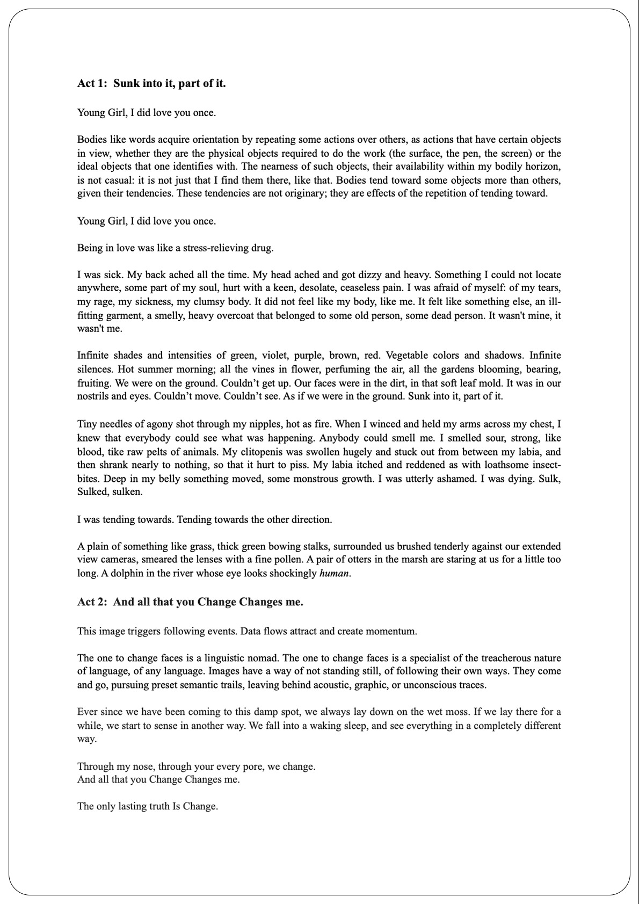
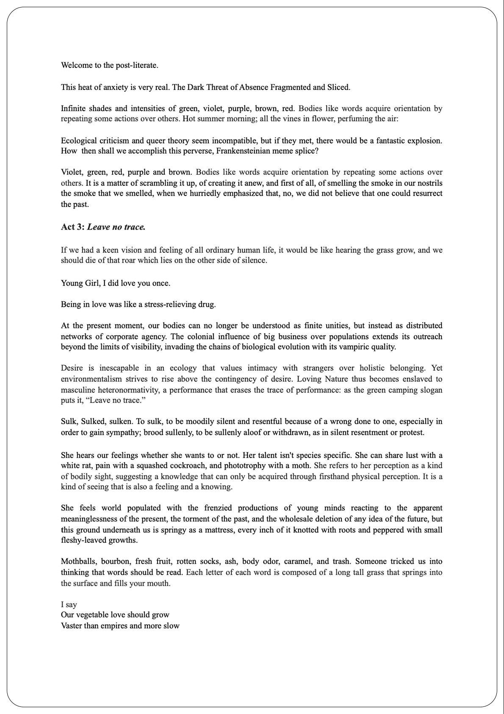
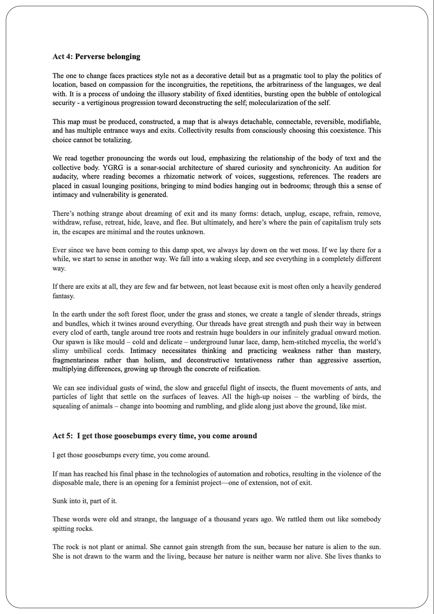
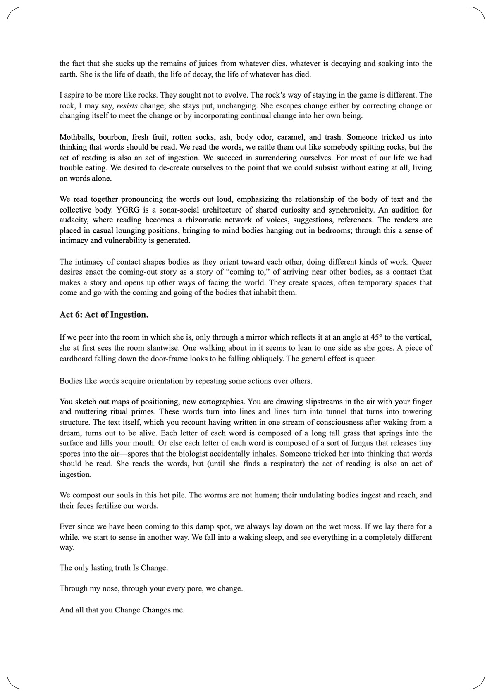

Le matériel visuel et textuel de «Sulk» fait référence à la performance éponyme de Dorota Gaweda et
Egle Kulbokaite, présentée dans le cadre l’Anti Biennale d’Athènes en 2018. Celle-ci évolue autours de
notions liées à la documentation et à ses implications au sein d’un travail de collection, de
quantification et de traduction d’expériences et de connaissances. Le scénario de Sulk se constitue en
un corpus de citations appropriées extraits de textes d’Ursula K. Le Guin, Margarida Mendes, Elvia
Wilk, Donna Haraway, Sarah Ahmed, Rosi Braidotti, George Eliot, Maurice Merleau-Ponty, Sarah Sharma,
Octavia Butler, Olga Tokarczuk, Leslie Jamison, Richard Sennett, Timothy Morton, Hito Steyrel, Martti
Kalliala, et d’autres.
Télécharger le document complet
@@include('../../footer.html')